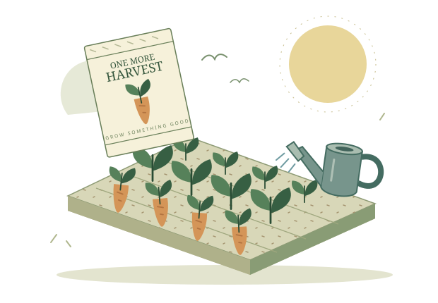

Plant with the
season on your side.
Is there time for one more crop? Find your last planting day, stretch your seed budget, and see what’s ready before the season turns.

A tiny garden. A little patience.
Make room for one more harvest.
One initial sowing, with repeat harvests for regrowing crops. No replanting simulation.
Compare this season’s crops with the same budget
Each row uses the same budget and plot cap for one initial planting. No replanting or reinvestment. Zero-harvest rows still include the seeds you would buy. Ranking covers only these five crops, not the full season or game.
No crops match this filter. Turn it off to see all five, or change your day, budget, or plots.
| Crop | First harvest | Plants | Seed spend | Gross sales | Net after seeds |
|---|
A plan in three
little steps.
For ordinary seasons and everyday farmers.
Start where you are.
Pick your season and today’s date. Tell us how much gold and growing room you have.
Choose your seeds.
See when a crop is ready, how often it regrows, and whether you’ve missed its deadline.
See the whole picture.
Check seed spending, harvest dates, and raw-crop sales before committing your gold.
A little know-how goes a long way.
The last day is closer than you think.
Count growing days correctly, leave yourself a buffer, and avoid the one-day mistake.
Read the field note ↗A small budget can grow good things.
Why seed price, cash left over, and profit per tile tell different stories.
Read the field note ↗Regrowing doesn’t always mean rewarding.
Late berries, missed harvests, and the quiet value of keeping some gold in your pocket.
Read the field note ↗The math, without
the mystery.
The planting day does not count as a growing day. First harvest = planting day + growth days. Last planting day = 28 − growth days. Regrowing crops add another harvest whenever their regrowth period fits before or on day 28.
Crop values are drawn from the Stardew Valley Wiki crop reference, using 1.6-era standard mechanics. See our full method and limitations. Valid plans can be remembered on this device. Optional share links carry inputs in the URL fragment; CSV exports are created locally. This independent fan project is not affiliated with ConcernedApe.